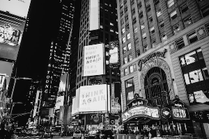

Blog
Capturando instantes de la vida urbana
La fotografía callejera es un arte que nos permite observar y capturar la vida cotidiana en las bulliciosas calles de nuestras ciudades. Con la cámara en mano, nos adentramos en un mundo lleno de historias efímeras, donde cada instante es
único y irrepetible. Los fotógrafos callejeros buscan capturar emociones, gestos espontáneos y escenas auténticas que reflejan la diversidad y la vitalidad de la vida urbana.

A través de composiciones creativas, luces y sombras, y la elección del momento perfecto, estas imágenes nos invitan a detenernos y apreciar la belleza y la poesía oculta en lo mundano. La fotografía callejera es un testigo silencioso de
nuestras ciudades, un arte que nos muestra la realidad a través de los ojos del fotógrafo.
continuar leyendo...
Una mirada a través del objetivo
Sumergirse en la fotografía de paisajes naturales es una experiencia fascinante que captura momentos efímeros de la madre tierra. Cada clic de la cámara nos permite preservar la grandeza y la serenidad de la naturaleza, transportándonos a
lugares remotos y mágicos.
Desde majestuosas montañas hasta océanos infinitos, la fotografía de paisajes nos invita a contemplar la inmensidad y la perfección de la creación. Es un baile armónico entre el ojo del fotógrafo y la grandiosidad del entorno, donde la
luz, los colores y las texturas se entrelazan para crear imágenes que despiertan emociones.
Fotografiar paisajes naturales es mucho más que una simple captura, es un intento de preservar y compartir la asombrosa belleza de nuestro mundo.
continuar leyendo...
Técnicas fotográficas para paisajes
La fotografía de paisajes es un arte que requiere técnica y sensibilidad para capturar la majestuosidad de la naturaleza. Al utilizar diversas técnicas, podemos potenciar la belleza de los paisajes y crear imágenes impactantes. Una
técnica fundamental es el uso del trípode, que permite obtener fotografías nítidas y evitar el temblor de la cámara. El manejo de la composición es igualmente importante, aplicando reglas como la regla de los tercios o la línea del
horizonte para lograr equilibrio y armonía. El control de la profundidad de campo mediante la apertura del diafragma nos permite enfocar elementos específicos y desenfocar el fondo, creando un efecto de profundidad. Además, el uso de
filtros polarizadores o de densidad neutra ayuda a controlar la luz y resaltar los colores. Experimentar con exposiciones largas también puede generar efectos de movimiento en el agua o las nubes. Con estas técnicas, podemos capturar la
grandeza y la emoción de los paisajes naturales, transportando al espectador a lugares de ensueño. continuar leyendo...